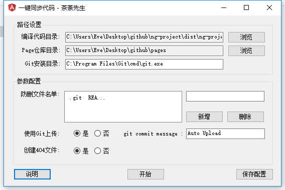

<div class="tutorial-no-anchor">
    <h2 id="resume">概述</h2>
    在实际开发过程中存在以下场景:
    <ul>
        <li>
            写完代码后打包,需要手动将编译后的代码复制到部署的文件夹
        </li>
        <li>
            如果部署的是page服务,需要先将原先的一些过时文件删除(之前版本的JS),但是又不能全删,需要保留一些文件(.git README.md)
        </li>
        <li>
            page的仓库每次都要运行
            <span class="key-word">git add .</span>、
            <span class="key-word">git commit -m msg</span>、
            <span class="key-word">git push</span>,太麻烦了
        </li>
    </ul>
    针对这个问题,这个小工具可以帮助开发者们自动完成这些繁琐的操作.
    <ul>
        <li>
            github仓库:
            <a href="https://github.com/Eve-1995/auto-upload" target="view_window">https://github.com/Eve-1995/auto-upload</a>
        </li>
        <li>
            工具下载链接:
            <a href="https://pan.baidu.com/s/147yfS1vbQJASzsSMSxM3ew" target="view_window">https://pan.baidu.com/s/147yfS1vbQJASzsSMSxM3ew</a>
        </li>
    </ul>
    <h2 id="form">界面展示</h2>
    
    <h2 id="usage">用法演示</h2>
    <nz-card class="card">
        <video controls src="../../../../assets/video/auto-upload-usage.mp4"></video>
    </nz-card>
    <h2 id="code-analysis">源码分析</h2>
    <nz-card class="card">
        <video controls src="../../../../assets/video/code-analysis.mp4"></video>
    </nz-card>
</div>